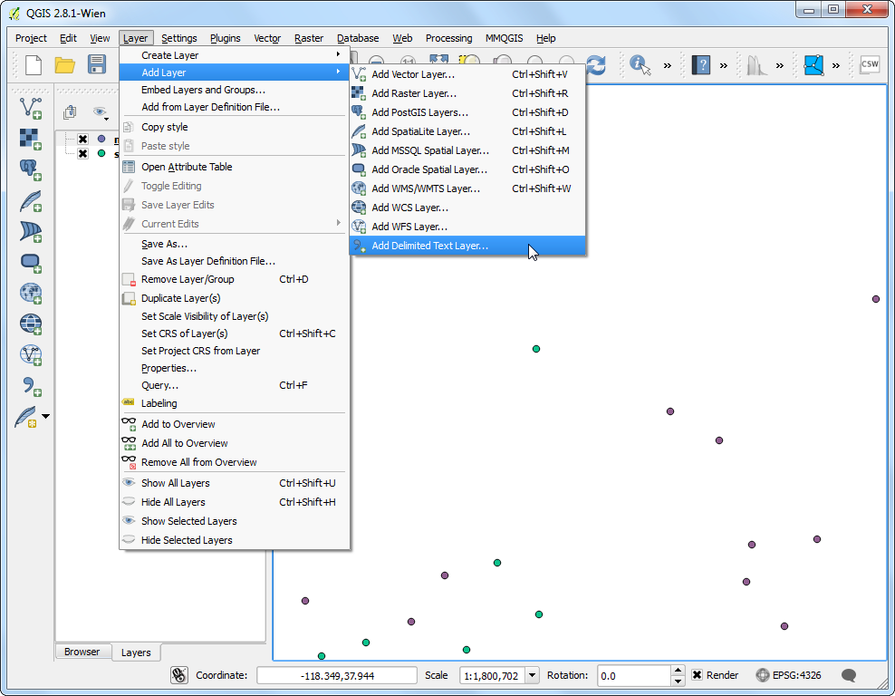
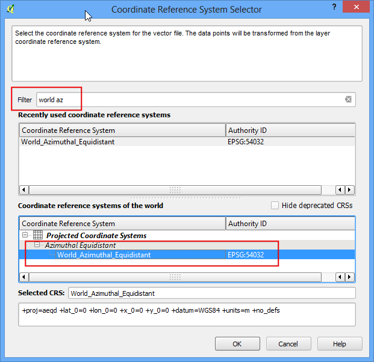

Realizzare mappe web leaflet con qgis2leaf
[ Download PDF
A4
Letter ]
Avvertimento
qgis2leaf plugin is no longer in active development. The functionality of
this plugin is folded into a new plugin called qgis2web.
Leaflet è una celebre libreria di Javascript open-source idati per realizzare applicazioni di mapping su web. Il plugin qgis2leaf ci offre un semplice strumento per esportare la vostra mappa QGIS e trasformarla in una mappa web basata su Leaflet. Questo plugin è uno strumento efficace sia per iniziare a lavorare con il web mapping sia per creare una mappa web interattiva a partire da Layer GIS di tipo statico.
Descrizione dell’esercizio
Creeremo una web map leaflet degli areoporti presenti sul pianeta.
Altri aspetti che avremo modo di apprendere nel corso dell’esercitazione.
Procedimento
Installiamo il plugin qgis2leaf andando su . Tenete conto del fatto che questo plugin è attualmente classificato come sperimentale, quindi la casella che corrisponde alla voce Mostra anche plugin sperimentali dovrà essere spuntata. (Vedi Usare i Plugins per maggiori dettagli sull’installazione dei plugin in QGIS).

Estraete il file appena scaricato ne_10m_airports.zip. Aprite QGIS e andate su Individuate la cartella in cui i file sono stati decompressi e selezionate ne_10m_airports.shp. Fate click su OK.

Una volta che il file ne_10m_airports è stato caricato, utilizziamo lo strumento Informazioni elemento per fare qualche click sugli elementi puntuali e dare un primo sguardo agli attributi. Creeremo una mappa in cui suddivideremo gli aeroporti in tre categorie principali. L’attributo type ci sarà prezioso proprio quando andremo a suddividere gli aeroporti in diverse categorie.

Tasto destro sul layer ne_10m_airports e selezionate Opri Tabella Attributi.

Nella finestra della tabella degli attributi fate click sul pulsante Modalità di Modifica e quindi sul pulsante Apri il calcolatore dei campi .

Ciò che intendiamo fare, adesso, è creare un nuovo attributo che chiameremo type_code. In tale attributo assegneremo valore 3 agli aeroporti più grandi, 2 a quelli di medie dimensioni e 1 a tutti gli altri. Utilizzeremo la clausola di selezione CASE e scriveremo un’espressione che esaminerà i valori dell’attributo type e creerà un nuovo attributo type_code basato sulla condizione inserita nell’espressione. Spuntate la casella Crea un nuovo campo e inserite ``type_code` come Nome campo in output. Selezionate Numero Intero (integer) alla corrispondente voce Tipo campo in output. Dentro la finestra chiamata Espressione inserite il codice seguente
CASE WHEN "type" LIKE '%major%' THEN 3
WHEN "type" LIKE '%mid%' THEN 2
ELSE 1
END

Torniamo nella finestra della :guilabel:` Tabella Attributi` e vedrete la nuova colonna che si è aggiunta in fondo alla tabella. Verificate che la nostra espressione abbia lavorato in modo corretto e quindi fate premete il pulsante Modalità Modifica per salvare i cambiamenti appena realizzati.

Adesso possiamo finalmente tematizzare in modo significativo il layer degli areoporti usando il nuovo attributo chiamato type_code . Fare click con il tasto destro sul layer ne_10m_airports e selezionate Proprietà.

Selezionate nel layer la scheda Stile nella finestra di dialogo Proprietà . Selezionate lo stile Categorizzato dal menu a discesa e scegliete type_code come Colonna. Scegliete una scala di colore a vostra scelta e fate click su Classifica. Ora fate click su OK per tornare alla finestra principale di QGIS.

A questo punto, vedrete una mappa degli aeroporti ben tematizzata. Ora esportiamo questa mappa in una finestra interattiva che potrebbe essere presente su web. Andiamo su .

Nella finestra di dialogo di QGIS 2 Leaflet fate click su Get Layers per avere la lista dei layer. Selezionate l’opzione Full screen per avere una mappa web a schermo intero. Scegliete layer extent come Extent della mappa da esportare. Scegliete sul vostro sistema una cartella per la cartella di output su cui il plugin andrà a scrivere i file di output. Click su OK.

Terminato il processo di esportazione, andate sulla cartella in cui avete indirizzato il processo di output. Aprite il file index.html in un browser. Vedrete una mappa web interattiva che è una replica della mappa di QGIS. Potete effettuare operazioni di zoom e di pan intorno alla mappa e, facendo click sugli elementi, otterrete una finestra di popup con una serie di informazioni riguardanti l’aeroporto su cui avete fatti click. Per avere una vera web map sarà sufficiente copiare il contenuto di questa cartella su un web server.

Ora esamineremo alcune funzioni avanzate di questo plugin che vi permetteranno di personalizzare la mappa. Per esempio, alcuni attributi non sono molto utili e le finestre di popup nell’insieme sono piuttosto brutte. Possiamo modificare il popup di default con del nostro codice HTML per renderlo molto più attraente. Questo risultato si ottiene aggiungendo il nostro codice HTML in una colonna chiamata html_exp. . Fate click con il tasto destro sul layer ne_10m_airports e selezionate Apri Tabella Attributi.

Nella finestra della tabella degli attributi fate click sul pulsante Modalità di Modifica e quindi sul pulsante Apri il calcolatore dei campi .

Spuntate la casella Crea un nuovo campo e digitate html_exp come Nome campo in output. Scegliete Testo (stringa) alla voce Tipo campo in output. Dal momento che creeremo una stringa HTML piuttosto lunga, scegliete 200 come larghezza campo in output. Inserite l’espressione di seguito nello spazio Espressione. L’espressione è complessa solo in apparenza, in realtà definisce una tabella HTMLe sostituisce le intestazioni delle celle iata_code, name e type. Controllate l’anteprima in basso per assicurarvi che l’espressione abbia svolto il suo compito come previsto.
concat('<h3>', "iata_code", '</h3><table>', '<tr><td>Airport Name: <b> ',
"name", '</b></td></tr><tr><td>Category: <b> ', "type",
'</b></td></tr></table>')
Nota
Il formato shapefile può contenere un massimo di 254 caratteri in un campo. Se volete immagazzinare quantitativi di dati maggiori dovete scegliere un diverso formato.

Torniamo nella finestra della :guilabel:` Tabella Attributi` e vedrete la nuova colonna che si è aggiunta in fondo alla tabella. Verificate che la nostra espressione abbia lavorato in modo corretto e quindi fate premete il pulsante Modalità Modifica per salvare i cambiamenti appena realizzati.

Adesso esportiamo la mappa di nuovo, usando .

Impostate le opzioni esattamente come avete fatto sopra.

Quando il processo sarà concluso, andate nella cartella in cui avete indirizzato l’output. Troverete una sottocartella che ha come nome la data e l’ora in cui è stato lanciato il processo. Trovate al suo interno il file index.html e apritelo in un browser. Fate click su qualsiasi geometria e date un’occhiata alla nuova finestra di popup.

Un’altra caratteristica molto utile del plugin qgis2leaf è la sua abilità nello specificare un’icona personalizzata da usare con la web map. Questo si ottiene specificando il path dell’icona in un campo chiamato icon_exp.. Creeremo un nuovo layer contenente solo gli areoporti classificati come principali e lo tematizzeremo usando un’icona SVG .scelta da noi. Individuate il pulsante Select features using an expression dalla barra degli strumenti.

Inserite l’espressione qui sotto e premete Seleziona per selezionare tutti gli aereporti più grandi.

Click con il tasto destro sul layer del file ne_10m_airports e selezionate Salva Selezione con Nome....

Nella finestra di dialogo Salva vettore con nome... chiamiamo il file di output con il nome di major_airports.shp. Spuntate la casella Aggiungi il file salvato sulla mappa e fate click su OK.

Una volta che il layer major_airports è stato caricato in QGIS, fate click con il tasto destro e selezionate Apri Tabella degli Attributi.

Nella finestra della tabella degli attributi fate click sul pulsante Modalità di Modifica e quindi sul pulsante Apri il calcolatore dei campi .

Nella finestra del calcolatore campi, inserite icon_exp come Output field name. e definitelo come Testo (stringa). Nell’area Expression inserite la seguente espressione

- Save your edits by clicking the Toggle Editing button in the
Attribute Table.

Aprite il qgis2leaf plugin da .
Fate click su Get Layers per portare entrambi i layer da QGIS. Ci sono molti e diversi layer a disposizione, pre-costruiti che si usano agevolmente per le mappe di base. In questa mappa però stiamo facendo qualcosa di diverso e carichiamo lo Stamen Watercolor come Basemap.. Click su OK.

Come ricorderete, abbiamo specificato il nome airport.svg per l’icona degli areoporti. E’ necessario trasportare manualmente quell’icona nella directory in cui abbiamo inviato il nostro output. QGIS fornisce un’ampia collezione di icone. In ambiente Windows queste icone sono collocate nella cartella .Ma il percorso può essere diverso a seconda della vostra piattaforma e del tipo di installazione. Individuate la cartella e scegliete l’icona che preferite. Per la nostra mappa, possiamo usare l’icona amenity=airport.svg che si trova sotto la categoria transport.

Copiate l’immagine e incollatela nella cartella di output che avete specificato quando avete esportato la mappa. Rinominate l’immagine con il nome di``airport.svg``.

Ora aprite il file index.html che si trova nella cartella. Vedrete una bella mappa di base con le nostre icone ad indicare gli areoporti principali. Noterete anche che il pannello in alto a destra ha la possibilità di visualizzare entrambi i layer.

Hope this tutorial gives you a head start in creating web maps. Below is the
live interactive map created for this tutorial.